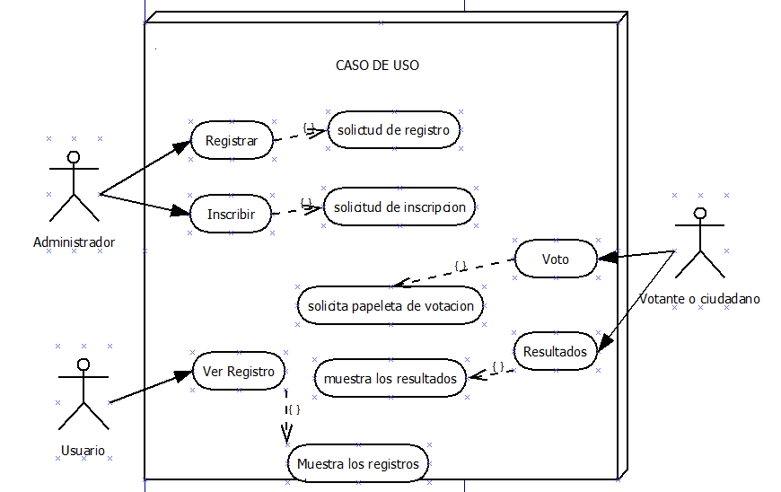
Inicio Sesión
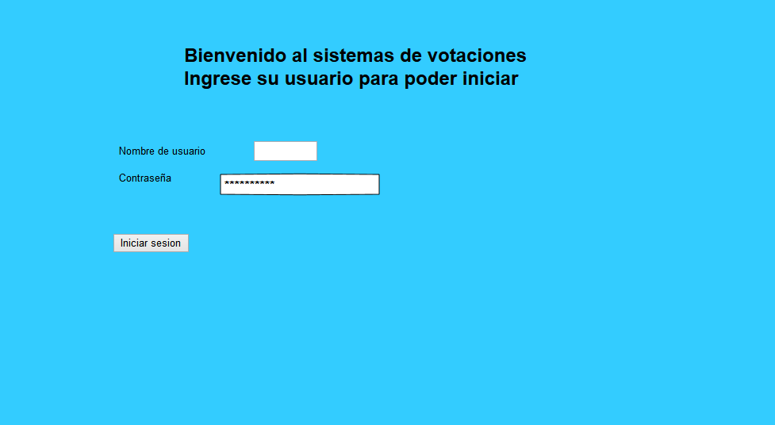
Registro de usuario
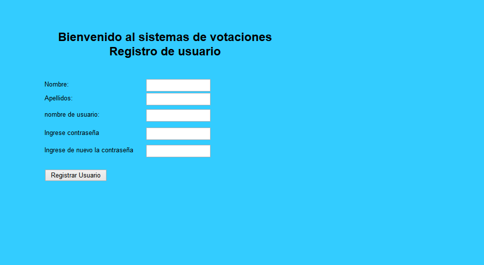
Tipo de elección
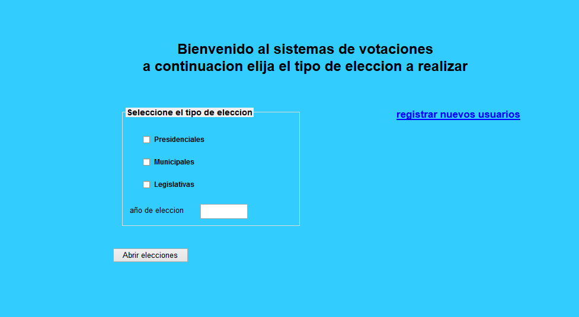
Inscripción de partidos
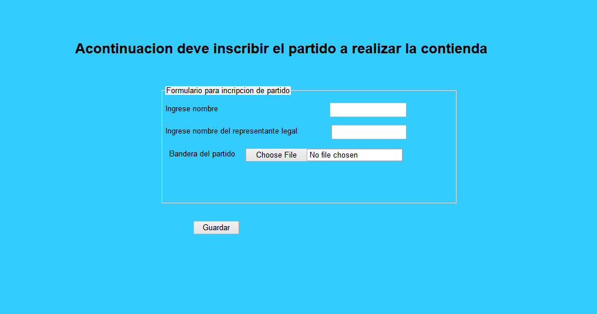
Candidato a Presidente
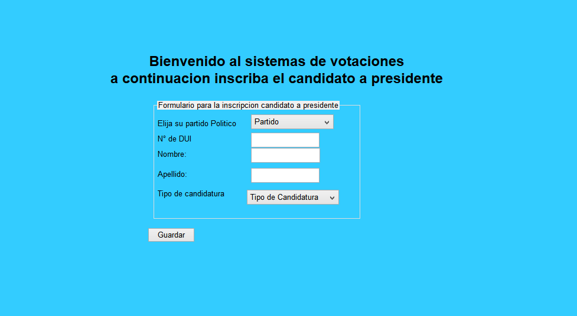
Candidato a Diputado
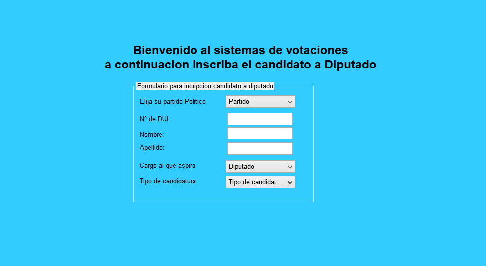
Candidato a Alcalde
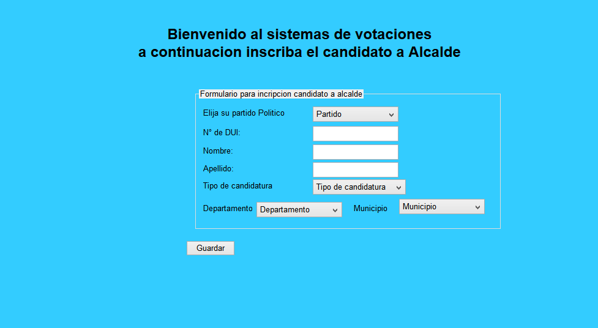
Verificación del votante
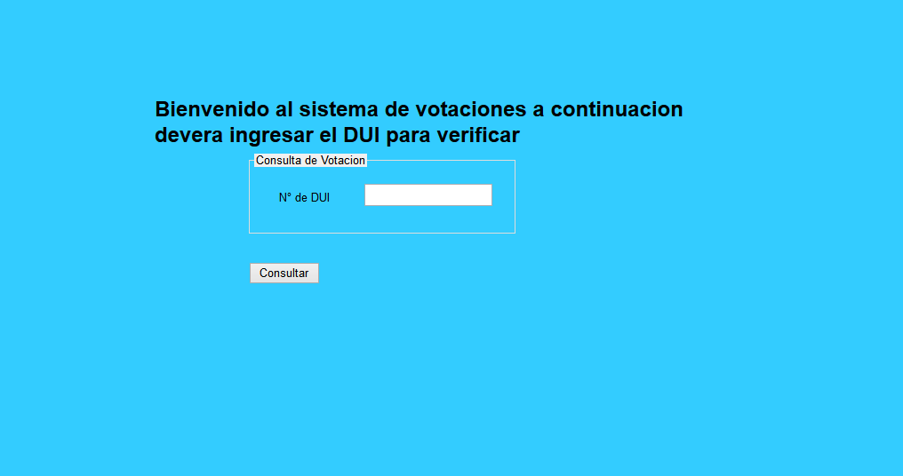
Voto presidencial
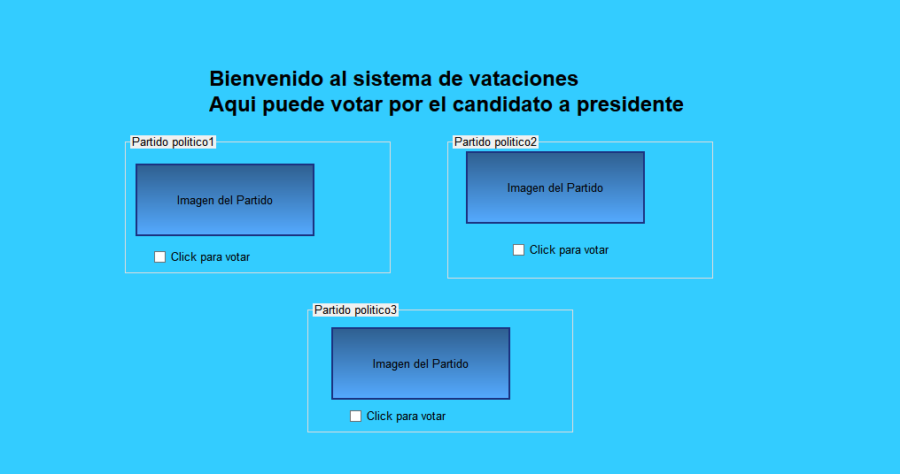
Voto diputados
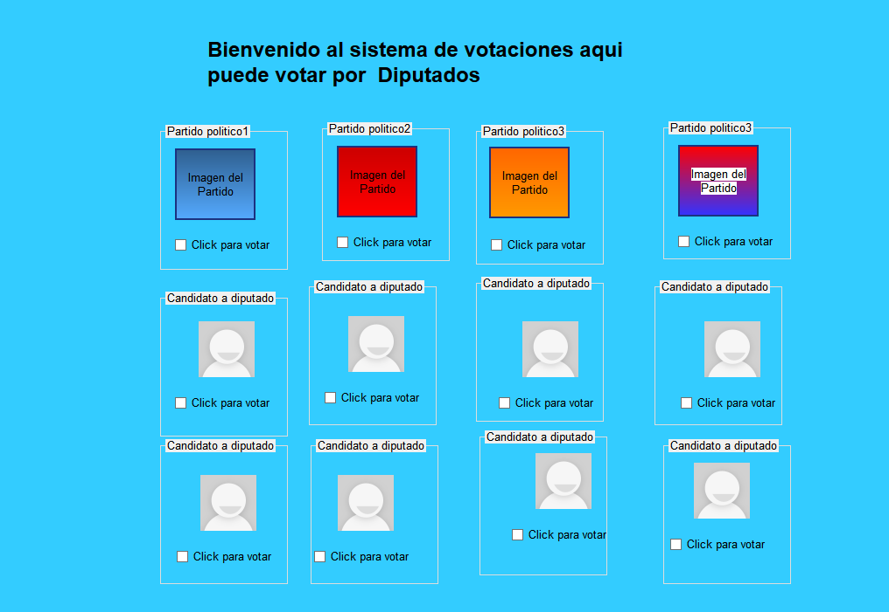
Votación alcalde